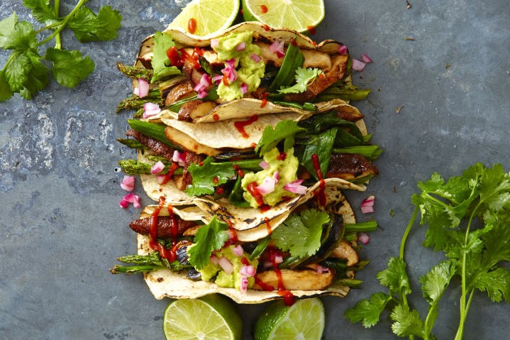
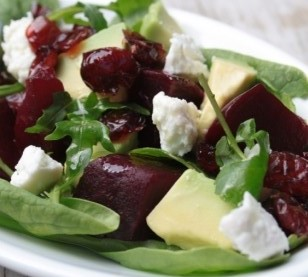
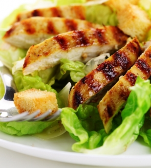
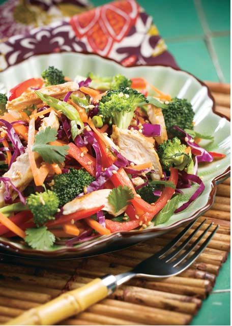
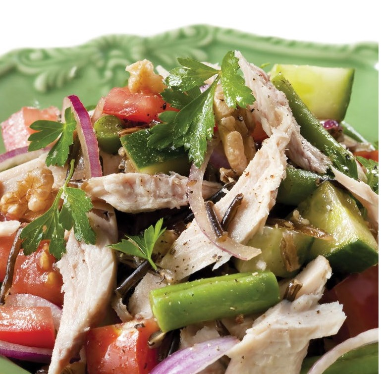
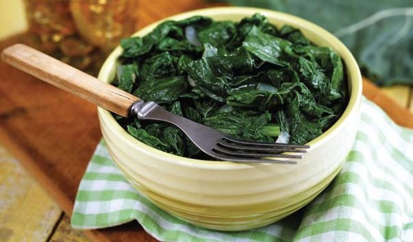
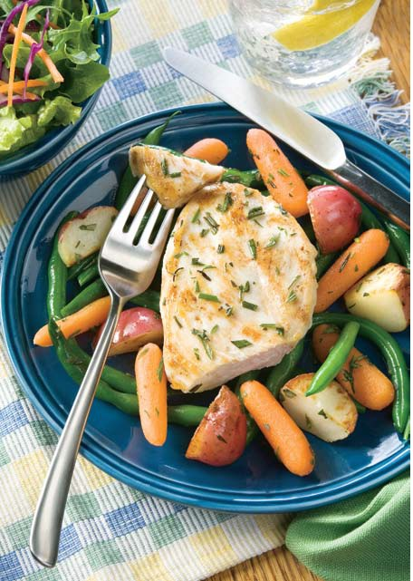
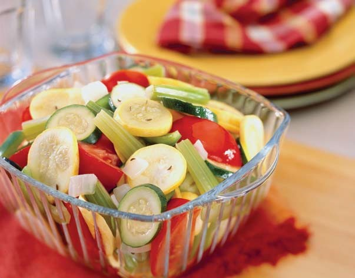
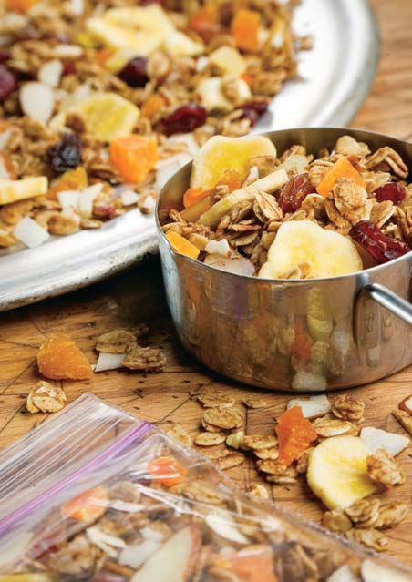
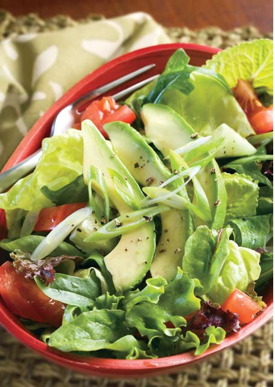

Grilled Asparagus and Shiitake Tacos

| Ingredients | Method |
|
3 tbsp. canola oil
4 garlic cloves, crushed with press
1 tsp. ground chipotle chile
1/2 tsp. Kosher salt
8 oz. shiitake mushrooms, stems discarded
1 bunch green onions, trimmed
8 corn tortillas, warmed
1 c. homemade or prepared guacamole
Lime wedges
cilantro sprigs
|
- Heat grill on medium. In a large baking dish, combine oil, garlic, chipotle, and salt. Add asparagus, shiitakes, and green onions; toss to coat. Grill asparagus until tender and lightly charred,
turning occasionally; 5 to 6 minutes. Grill shiitakes and green onions until lightly charred, turning occasionally; 4 to 5 minutes. Transfer vegetables to cutting board.
- Cut asparagus and green onions into 2" lengths and slice shiitakes. Serve with corn tortillas, guacamole, lime wedges, cilantro, and hot sauce.
|
Beetroot, Avo & Goat's Cheese Salad

| Ingredients | Method |
|
400 g cooked beetroot, sliced into wedges or cubes
olive oil
5 ml garlic paste
salt and freshly-milled black pepper
4 large handfuls of mixed leaves like baby spinach, rocket and torn basil leaves
1 large avocado, cut into slices or cubes or slices
100 g (1 x roll) chevin (soft goat's cheese), broken into small pieces
100 g dried cranberries
Lime wedges
Crema balsamic vinegar glaze to serve
|
- You can use the beetroot as is - just cooked and seasoned with the olive oil, garlic paste (if using) and salt and pepper. Or, if you want a delectable stickiness, bake it. Place the wedges or cubes on a baking sheet and drizzle lightly with olive oil and season to taste with garlic paste (if you like) and salt and pepper. Mix lightly then bake in the oven preheated to 190 degrees C for 30 minutes or until sticky and caramelized. Remove from the oven and allow to cool
- Line a salad platter with the leaves and arrange the beetroot on top. Dot with the avocado followed by the goat's cheese. Finally scatter over the cranberries and serve, passing around with the 'Crema' balsamic glaze, olive oil, a salt mill and pepper grinder.
|
Chicken Caesar Salad (Serves 4 as a light meal)

| Ingredients | Method |
|
30 ml white wine vinegar
10 ml Worcester sauce
1 jumbo egg yolk
30 ml Dijon mustard
30 ml mayonnaise
3 or 4 anchovy fillets, coarsely sliced
1 or 2 cloves garlic, coarsely sliced
125 ml light olive oil
90 ml Parmesan cheese, finely grated
salt and freshly-milled black pepper
4 generous handfuls baby butter lettuce leaves
2 or 3 grilled chicken breast fillets, sliced thinly
250 or 375 ml baked croutons
|
- First make the dressing by placing the vinegar, Worcester sauce, egg yolk, mustard, mayonnaise (if using), anchovies and garlic into a small processor or blender jug. Process until smooth.
- Transfer mixture to a mixing bowl. Now, adding the oil in a thin stream, whisk until the dressing is emulsified. Stir in the Parmesan and season to taste adding a drop or two more vinegar if you like.
- Place the lettuce leaves on a salad platter and arrange the chicken slices on top. Scatter with the croutons and drizzle with the dressing before serving.
|
Huevos Rancheros with Fresh Salsa (Serves 4 )
| Ingredients | Method |
|
4 (6-inch) corn tortillas
½ tablespoon vegetable oil
nonstick cooking spray
1½ cups egg or egg substitute
2 tablespoons shredded Cheddar or Monterey Jack cheese
2 cups Fresh Salsa
1⁄8 teaspoon ground black pepper
|
- Preheat oven to 150°C.
- Cut the bread into cubes; toss with oil and garlic in a small
bowl. Spread the cubes in a single layer on a baking sheet
and toast in the oven for 15 to 25 minutes, or until golden
brown, tossing once or twice. Transfer to a plate to cool.
- Spray a medium pan with nonstick cooking spray and heat
over medium-high heat. Pour in egg or substitute.
- When the egg begins to set, spread evenly across the
bottom of the pan and reduce the heat to low.
- Once the top layer of egg is almost cooked, sprinkle the
cheese and basil on top and scatter the tomatoes and bread
over half of the omelet; fold the unfilled omelet half over the
filling. Slide the omelet on a plate and serve.
|
Zesty Asian Chicken Salad (Serves 5 )

| Ingredients | Method |
|
3 boneless, skinless chicken breasts, cooked and chilled
3 green onions, sliced
1½ cups small broccoli florets
2 medium carrots, peeled and cut into strips
1 red bell pepper, cut into strips
2 cups shredded cabbage
½ cup fat free Asian or sesame salad dressing
¼ cup chopped fresh cilantro
¼ cup 100% orange juice
|
- Cut chicken breasts into small strips and place in a medium bowl with onions, broccoli, carrots, bell peppers, and cabbage.
- In a small bowl, stir together dressing and juice. Pour over salad and toss well to coat. Stir in cilantro. Serve at room temperature.
|
Wild rice,chick pea and chicken salad (Serves 6 )

| Ingredients | Method |
|
1/2 cup wild rice, cooked
1 large tomato
2 tsp lemon juice, freshly squeezed
2 small skinless chicken breasts
Ground black pepper, to taste
2 tbs flat leaf parsley, finely chopped
1/2 tin chickpeas, canned, rinsed and drained
large packet rocket, rinsed and drained
1 tbs olive oil
2 tsp balsamic vinegar
|
- Cook the wild rice according to the packet instructions.
- Cut the chicken breast into bite-sized pieces and pan
fry in a non-stick pan with fresh lemon juice. Cook the
chicken pieces until they are golden brown. Remove
the chicken from the heat and allow to cool.
- Chop the tomatoes and put them in a bowl. Season
well with freshly-ground black pepper, then add the
vinegar and olive oil.
- Toss several times to make sure the tomatoes are well
coated in the vinaigrette. Add the rice, chicken and
chickpeas. Toss once more.
- Arrange the rocket and parsley on a serving platter.
Spoon the rice salad over and serve.
|
Chicken Caesar Salad (Serves 4 )
| Ingredients | Method |
|
3 cloves garlic
1/2 cup extra-virgin olive oil, plus more for brushing
2 to 4 anchovy fillets, chopped
Juice of 1 lemon
Kosher salt and freshly ground pepper
1 pound skin-on, boneless chicken breasts
4 (1/2-inch-thick) slices focaccia or whole-wheat Italian bread
4 romaine lettuce hearts, halved lengthwise
3/4 cup freshly grated parmesan cheese, plus more for garnish
|
- Preheat a grill or grill pan to medium high.
- Make the dressing: Chop 2 garlic cloves and puree with 1/2 cup olive oil, the anchovies and lemon juice in a blender until smooth; season with salt and pepper. Pound the chicken with a mallet or heavy skillet until about 1/8 inch thick. Season with salt and pepper and toss with 1 tablespoon of the Caesar dressing.
- Grill the chicken until golden and crisp, 3 to 4 minutes per side.
- Brush the bread with olive oil on both sides and grill, turning, until toasted, about 2 minutes. Rub with the remaining garlic clove.
- Brush the romaine with 1 to 2 tablespoons of the dressing and grill until marked, 1 to 2 minutes per side.
- Chop the lettuce and transfer to a bowl. Cut the bread and chicken into bite-size pieces and add to the bowl.
- Toss with the remaining dressing, the parmesan, and pepper to taste. Garnish with more parmesan.
|
Savoury Greens (Serves 4 )

| Ingredients | Method |
|
3 cups water
¼ pound skinless, smoked turkey breast
¼ cup chopped onion
1 tablespoon chopped and seeded
jalapeño pepper
2 cloves garlic, crushed
¼ teaspoon cayenne pepper
¼ teaspoon ground cloves
½ teaspoon dried thyme
1 green onion, chopped
1 teaspoon ground ginger
2 pounds greens (mixture of mustard
greens, collard greens, kale, and
turnip greens)
|
- Place all ingredients except greens into a
large pot and bring to a boil.
- Prepare greens by washing thoroughly and
removing stems.
- Tear or slice greens into bite-size pieces.
- Add greens to turkey stock. Cook 20 to 30
minutes until tender. Serve while hot.
|
Rosemary Lemon Chicken (Serves 5 )

| Ingredients | Method |
|
½ pound small red potatoes
(about 3 potatoes), rinsed
and cubed
1½ cups baby carrots
1 cup green beans, trimmed
2 boneless, skinless
chicken breasts, halved (about 1 pound)
1 tablespoon olive oil
¼ teaspoon ground black pepper
1 teaspoon grated lemon peel
1 teaspoon dried rosemary
1 tablespoon chopped
fresh rosemary or
¼ cup lemon juice, divided 2 tablespoons honey*
|
- In a medium pot, bring 8 cups of water to a boil.
- Add potatoes, carrots, and green beans and cook for 5 minutes; drain and set aside.
- Cut chicken breasts in half. Place olive oil and chicken
breasts in a medium skillet; cook over medium heat for
5 minutes on each side.
- Add potatoes, carrots, green beans, and all remaining
ingredients to skillet, except 2 tablespoons lemon juice.
- Cook over low heat for 5 minutes more or until chicken
is fully cooked. Add remaining lemon juice to taste and serve.
|
Herbed Vegetable Combo (Serves 3 )

| Ingredients | Method |
|
2 tablespoons water
1 cup thinly sliced zucchini
1¼ cups thinly sliced yellow squash
½ cup green bell pepper, cut into 2-inch strips
¼ cup celery, cut into 2-inch strips
¼ cup chopped onion
½ teaspoon caraway seeds
1⁄8 teaspoon garlic powder
1 medium tomato, cut into 8 wedges
|
- Heat water in a medium pan. Add zucchini, squash, bell pepper, celery, and onion.
- Cover and cook over medium heat until
vegetables are crisp-tender, about 4 minutes.
- Sprinkle seasonings over vegetables. Top with tomato wedges.
- Cover again and cook over low heat until
tomato wedges are warm, about 2 minutes. Serve warm.
|
Tropical Fruit and Nut snack Mix (Serves 5 )

| Ingredients | Method |
|
1 tablespoon butter
¼ cup honey
1 teaspoon almond or coconut extract
1 teaspoon ground cinnamon
2 cups old fashioned oats
nonstick cooking spray
½ cup sliced almonds
¾ cup dried tropical fruit bits
¼ cup raisins
½ cup banana chips
|
- Preheat oven to 350°F.
- Melt butter in a medium saucepan. Add honey, almond or
coconut extract, and cinnamon; mix well.
- Stir in oats and transfer to a baking sheet coated with
nonstick cooking spray. Spread into a 1-inch thick layer.
- Bake for 10 minutes, stirring once. Stir in almonds and bake
for 5 to 10 minutes more.
- Remove from oven and toss with dried fruit. Let cool completely and serve.
|
Avocado Garden Salad (Serves 5 )

| Ingredients | Method |
|
6 cups torn or cut mixed salad greens
3 medium tomatoes,chopped
5 green onions, chopped
1 small cucumber, peeled and chopped
2 tablespoons lemon juice
1⁄3 teaspoon garlic powder
½ teaspoon salt
1 large avocado, peeled
½ teaspoon ground black pepper
|
- Mix salad greens, tomatoes, onions, and cucumber in a large serving bowl.
- In a small bowl, mix lemon juice, garlic powder, ground black pepper, and salt. Pour over salad mixture and toss together.
- Cut avocado in half lengthwise. Remove pit and peel avocado halves. Slice into thin wedges, about 1/8-inch thick.
- Arrange avocado slices on top of salad and serve immediately.
|